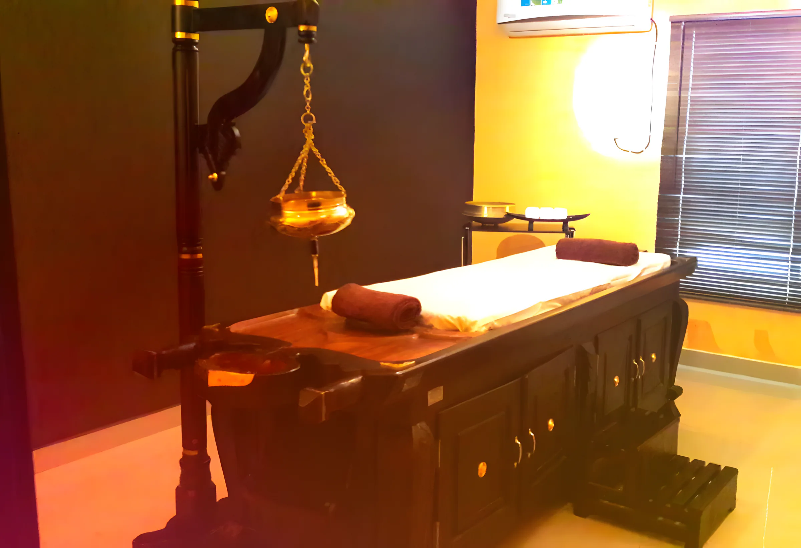
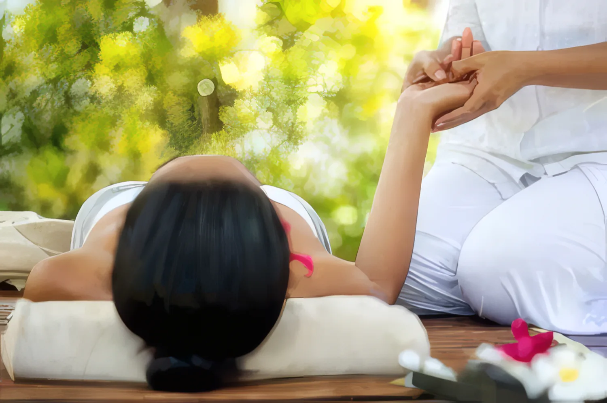

See the doctor
Every course starts with a consultation. The doctor asks about your history, reads your pulse and decides what your body needs. Ask about free consultations when you book.
Kerala Ayurveda in Sharjah. Our doctor sees you first, reads your pulse and plans a course for your back, joints, stress, weight or skin. Treatments run daily in our own rooms at Al Zahra Square.

Tell the doctor what's wrong and he'll choose the treatment. These are the problems we see most, and the therapies usually used for them.
Warm medicated oil is held over the painful area inside a ring of herbal paste, then followed by herbal bundle massage.

Herbal bundles, warmed in oil, are pressed and massaged over the joint daily for 7 to 14 days.

In Sirodhara, medicated oil or buttermilk flows in a steady stream over the forehead with a gentle scalp massage. We use it for poor sleep, tension, chronic headaches and poor concentration.

Ten days of Udwarthanam, a deep massage with herbal powders, together with a diet the doctor prescribes. Keeping to the diet is part of the treatment.

Traditional Kerala care for the weeks after birth, planned by the doctor around how you're recovering.

In Netra Tarpanam a pool of medicated ghee is held over each eye for 15 to 30 minutes. It eases strain from long hours on phones and computers.

The oils absorbed through the scalp during Sirodhara feed the hair roots. For the face we do herbal facials with Navara rice.

For lifestyle problems the doctor works mostly through food, daily routine and Ayurvedic medicine, with treatments where they help.

Ayurveda works in courses, not single visits. Most treatments run daily for 7, 14 or 21 days.
Every course starts with a consultation. The doctor asks about your history, reads your pulse and decides what your body needs. Ask about free consultations when you book.

You get a plan: which therapy, which oils, and how many days. Back pain might be 7 to 14 days of Kativasthi and Kizhi; weight loss is our 10-day programme.

Come in once a day for 45 to 60 minutes. Our rooms have the traditional wooden droni tables, the brass dhara pot and a herbal steam box.
The diet is part of the treatment. You go home knowing what to eat, what to avoid, and what to keep doing after the course ends.

B.A.M.S · Chief Ayurvedic Consultant
He comes from a traditional Ayurvedic family in Kerala and is a Ministry of Health approved Ayurvedic practitioner. Before Sharjah he ran his own Panchakarma centre in India.

“We know the pulse of each and every patient.”
From our current price list, in AED. Courses are priced for the full number of days. We confirm the price after the consultation, before anything starts.

Bring your insurance card. We check what your plan covers at reception before treatment starts.
Not sure about yours? Send a photo of the card on WhatsApp and we'll check it for you.
“I have continued the class with great enthusiasm, and the freshness of yoga has taken hold of me. Both are well experienced and skilled at how to teach students to fit their physical condition.”
4.8on Google, from our patients' reviews
“Got relief for acute cervical spondylosis.”
Al Zamil Building, Al Zahra Square, Sharjah
Near Al Zahra Hospital and the Clock Tower. P.O. Box 77302.
| Saturday | 9am – 10pm |
| Sunday | 9am – 10pm |
| Monday | 9am – 10pm |
| Tuesday | 9am – 10pm |
| Wednesday | 9am – 10pm |
| Thursday | 9am – 10pm |
| Friday | 9am – 9pm |